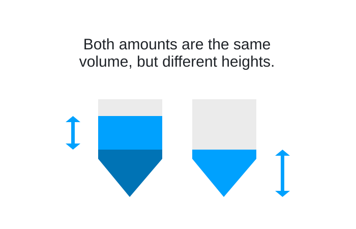

Surface following#
Surface following is a feature on Hamilton liquid handling robots that makes the pipette tip follow the surface of a liquid when aspirating (going down) or dispensing (going up).
When using surface following, the robot will automatically move the Z position of the pipette tip the user-specified distance. The amount of surface following required can be computed by comparing the liquid level before and after each aspiration or dispense. PyLabRobot can do this automatically when the height<>volume functions for the given containers are defined. You can also specify the liquid surface following distance manually.
It is useful to start the surface following only at the liquid level, so it is recommended to use liquid level detection with the surface following feature. (See below for syntax, which differs from the LLD tutorial). VENUS also supports surface following while doing LLD.
In PLR, when we have LLD + automatic surface following, we can go beyond VENUS by computing the surface following amount based on the precise location of liquid inside the container. This is necessary because the surface following amount is not just a function of the volume of liquid aspirated or dispensed, but also of the location of liquid inside the container (see below). By doing liquid level detection first to get the precise liquid level, we can then use that liquid level height to compute the surface following amount based on the requested volume and location of liquid inside the container.

Dummy setup#
from pylabrobot.liquid_handling import LiquidHandler
from pylabrobot.liquid_handling.backends.hamilton.STAR_backend import STARBackend
from pylabrobot.resources.hamilton import STARDeck
backend = STARBackend()
lh = LiquidHandler(backend=backend, deck=STARDeck())
await lh.setup()
from pylabrobot.resources import TIP_CAR_480_A00, hamilton_96_tiprack_1000uL_filter
tip_car = TIP_CAR_480_A00("tip_car")
tip_car[0] = tr0 = hamilton_96_tiprack_1000uL_filter("tr0")
lh.deck.assign_child_resource(tip_car, rails=2)
from pylabrobot.resources import PLT_CAR_L5AC_A00, CellTreat_96_wellplate_350ul_Ub
plt_car = PLT_CAR_L5AC_A00("plt_car")
plt_car[0] = plate = CellTreat_96_wellplate_350ul_Ub("plate")
lh.deck.assign_child_resource(plt_car, rails=14)
Automatic surface following#
wells = plate["A1:H1"]
vols = [50] * len(wells)
You can probe the liquid height first using liquid level detection (capacitive), and then use automatic surface following for subsequent aspirations and dispenses as follows:
async with lh.use_tips(tr0["A1:H1"], discard=False):
await lh.aspirate(
wells,
vols,
# Probe the liquid height before aspirating.
probe_liquid_height=True,
# Automatically adjust the following distance based on the probed liquid height.
auto_surface_following_distance=True,
)
await lh.dispense(
wells,
vols,
probe_liquid_height=True,
auto_surface_following_distance=True,
)
You can also pass the liquid height directly to the aspiration and dispense methods, and still use automatic surface following. This can be useful when you cannot use LLD.
async with lh.use_tips(tr0["A1:H1"], discard=False):
await lh.aspirate(
wells,
vols,
liquid_height=[10] * len(wells), # in mm above the bottom of the well
auto_surface_following_distance=True,
)
await lh.dispense(
wells,
vols,
liquid_height=[10] * len(wells), # in mm above the bottom of the well
auto_surface_following_distance=True,
)
Manual surface following#
To manually specify the surface following amount, you can use the surface_following_distance backend kwarg of the aspiration and dispense methods. For example, to aspirate 100 µL with a surface following amount of 2 mm starting at the detected liquid level:
async with lh.use_tips(tr0["A1:H1"], discard=False):
await lh.aspirate(
wells,
vols,
probe_liquid_height=True,
surface_following_distance=[2] * len(wells), # mm down after finding liquid
)
await lh.dispense(
wells,
vols,
probe_liquid_height=True,
surface_following_distance=[2] * len(wells), # mm up after finding liquid
)